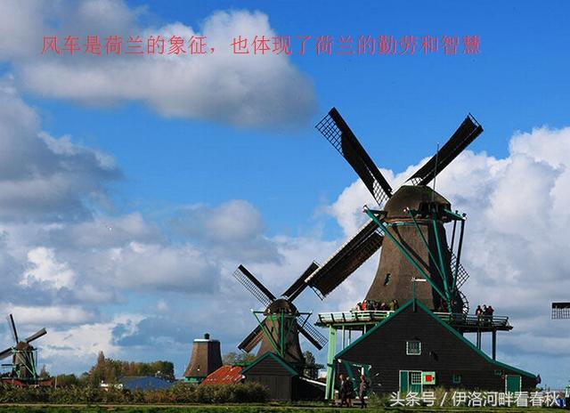
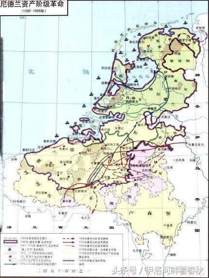
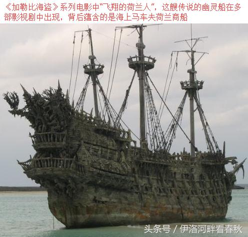
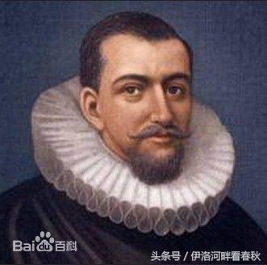
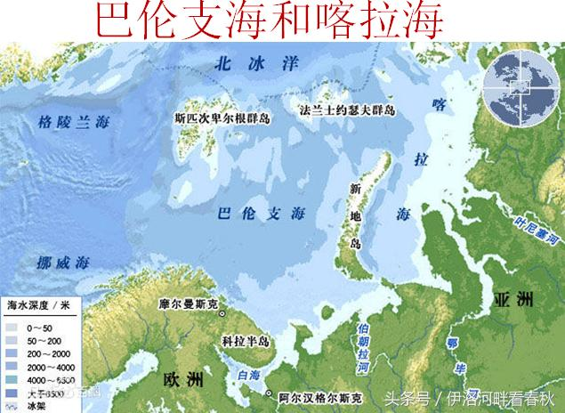
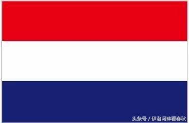

导读：人口仅有一千六百万，领土面积四万平方公里的荷兰，即使在小国林立的欧洲，也只是个小国，然而这个小国曾经在17世纪被成为海上马车夫，曾经创造了辉煌的历史。
荷兰地处莱茵河下游，濒临北海，土地狭小，自然资源贫瘠，勤劳智慧的荷兰人民向大海要土地，围海造田才有了自己的土地，是名副其实的低地国家（荷兰、比利时、卢森堡三国都被成为低地国家），也被成为尼德兰地区。荷兰人最关心的是发财致富的门路，任由强大的国王轮流统治，在14世纪成为神圣罗马帝国皇室——哈布斯堡家族的领地。身兼神圣罗马皇帝与西班牙国王与一身的查理五世退位，他把家族的起源地奥地利留给了兄弟，把富庶的尼德兰和西班牙留给了儿子腓力二世。腓力二世对荷兰的盘剥与查理五世相比，有过之无不及，引发当地人的强烈反抗，史称尼德兰革命。
新航路开辟后，葡萄牙控制向东的贸易，西班牙控制向西的贸易，两国赚得衣钵满盆。凭借强大的实力，西班牙在1580年强行合并葡萄牙，成为欧洲的霸主。在英王伊丽莎白一世授意下，以德雷克为代表的英国海盗频繁骚扰西班牙商船、殖民地和本土，最终在1588年成功击败无敌舰队。荷兰却在独立后没有挑战西班牙的霸权，而是专注于海上贸易。
因为与西班牙有冲突，英国商船上的水手都带着武器，商船兼具军舰的特色。荷兰人没有继续与西班牙纠缠，冒险建造出了一种仅能运送货物商船。由于商船没有装备武器，而且纯粹用于运货，所以造价很低，价格只有英国船只的一半，多出的空间又可以拉更多的货物。为了能获得尽可能多的利润，荷兰的船舶工程师对商船进行了改良，船舶肚子大而甲板小。因为在斯堪的纳维亚地区，船舶税取决于甲板的宽度，甲板越窄，所缴纳的税赋越少。
荷兰人不仅制造了先进的商船，还取得了雇主的信任。荷兰航海家威廉-巴伦支（1550-1597），坚信从通过北极一样可以抵达中国，毕生为之努力，为之献出了生命。1596年，巴伦支所在的商船被浮冰冲毁，他和水手们在新地岛被困，面对饥饿、严寒和极夜，他们设法宰杀北极熊和海象充饥，看到战友一个个倒下去，剩下的人没有心存杂念，丝毫未动雇主委托的货物，而这些货物中就有可以挽救他们生命的衣物和药品。幸存人们把货物几乎完好无损地带回，送到委托人手中，他们用生命作代价，创造了诚信经商的法则。为了纪念这次航行，人们把俄罗斯和挪威北部一大片海域命名为巴伦支海。
公司、银行、保险、证券交易所，这些现代经济组织在荷兰出现，阿姆斯特丹成为是国际贸易中心，港内经常停泊的商船多达两千艘。挪威的木材、丹麦的鱼类、波兰的粮食、俄国的毛皮、东南亚的香料、印度的棉纺织品、中国的丝绸和瓷器等等，大都由荷兰商船转运，经荷兰商人转手销售。荷兰的商船吨位占当时欧洲总吨位的3/4，拥有1.5万艘商船，几乎垄断了海上贸易，史称“海上马车夫”。

为了保护本国的商船，荷兰建设了强大的海军，鼎盛时期总吨位超过英法两国之和，舰队在各大洋游弋，还从事海外殖民掠夺，澳大利亚原名新荷兰，新西兰名称起源于荷兰，纽约原名新阿姆斯特丹。我国的台湾也在明清之际被荷兰霸占，长达三十八年之久，后被郑成功收复。荷兰没有同前宗主国西班牙争夺殖民地，却因三十年战争与新兴的英法结仇，为了与英国竞争海上贸易控制权，先后爆发三次战争，最终丧失了海上霸主的地位。1688年，英国爆发光荣革命，邀请英王詹姆士二世的女婿——荷兰执政奥兰治亲王威廉为国王，随着荷兰人当了英王，荷兰的海上霸主地位转给了英国。
